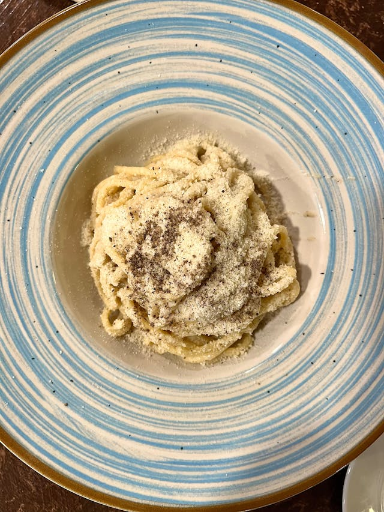

Cacio e Pepe (with Pici pasta)

Ingredients
- 1 lb pici pasta , or other long pasta (450g)
- 2.5 cups Pecorino Romano DOP, (200g)
- 1 tsp freshly ground black pepper
Method
- Important - there are slightly different instructions depending on if you are using fresh or dried pasta.
Dried pasta must be cooked at step 3 and fresh pasta cooked at step 7. This is a very quick recipe,
read all instructions before starting.
- Bring a pot of salted water to a boil (use less pasta water than you normally would so it's extra starchy).
Finely grate the pecorino and add it to a small mixing bowl, set aside.
- If using dried pasta start boiling it now making sure to undercook it by 2-3 minutes.
- Put the freshly ground pepper in a large dry pan on a medium heat, toast the pepper for a few seconds.
- After a few seconds add ½ cup (roughly 120ml) of pasta water, let it simmer as the pasta is cooking.
- Add a few ladles of pasta water to the pecorino cheese just a little at a time until it has the
consistency of loose creamy paste ( a little thicker than heavy cream, it won’t be super smooth).
- If using fresh pasta start boiling it now.
- When the pasta is about 2 minutes away from being cooked, transfer it to the pan with the pepper
using tongs and stir it for about 1 minute to release more starch.
- Next, turn the heat down low and add the pecorino mixture. Stir it continuously until a smooth
and creamy cheese sauce is created. It will look like it's going to split at first but keep
stirring and it'll turn into a smooth and creamy sauce. Once you reach the saucy consistency
turn the heat off and keep stirring for 1 more minute to let it thicken. Serve.
Home